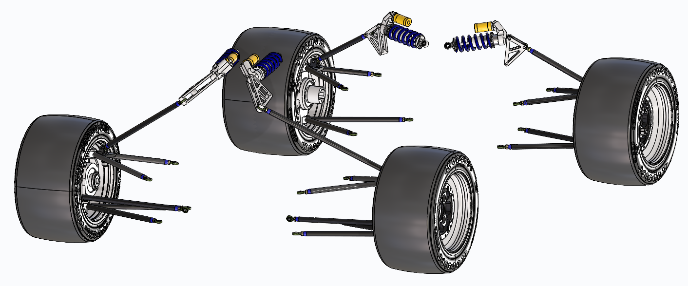
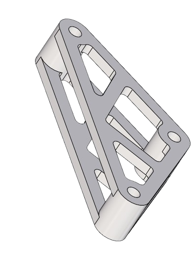
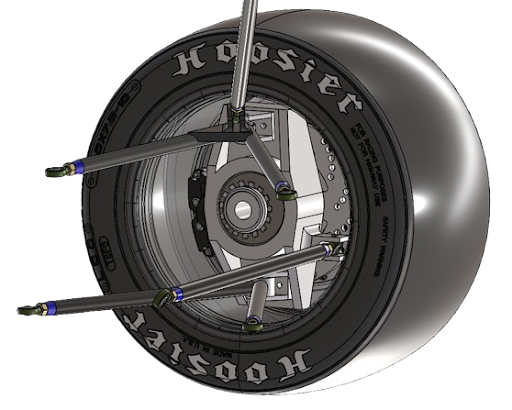
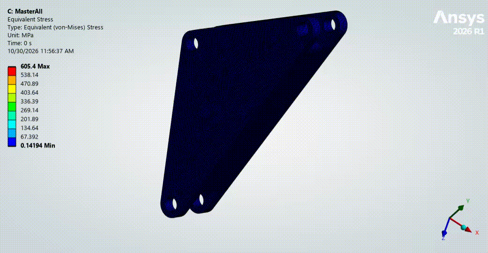
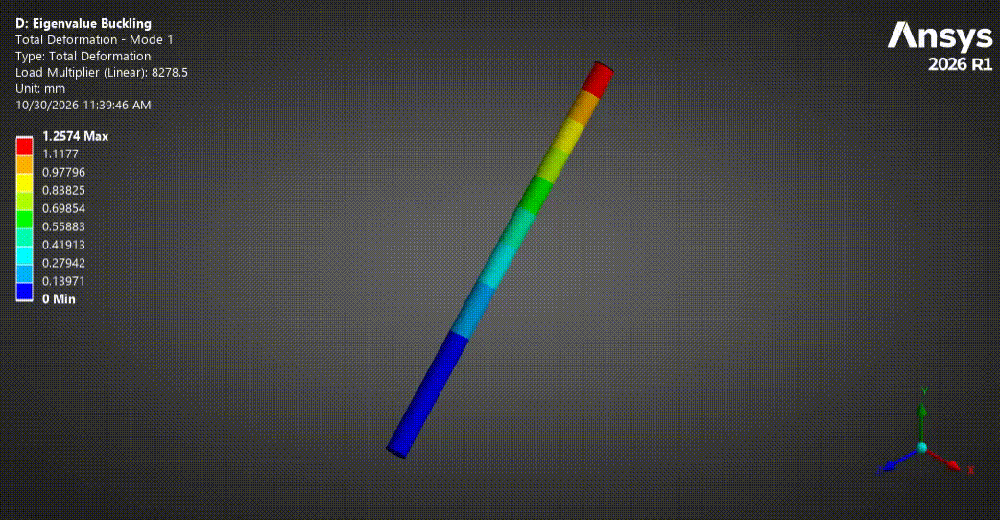
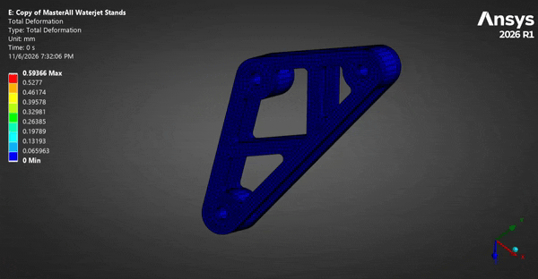

FSAE Suspension
Suspension Lead — Formula SAE Internal Combustion

Images/FSAE/FullSuspension.pngDescription
As Suspension Lead for an inaugural Formula SAE Internal Combustion (IC) team, I led the development of a custom suspension system from initial vehicle dynamics analysis through CAD design and structural simulation. Using MATLAB, Tire Test Consortium (TTC) data, and OptimumKinematics, I evaluated tire behavior and suspension geometry to establish design targets for camber, roll center migration, steering geometry, and handling. I translated these targets into SolidWorks, designing custom uprights, control arms, rocker assemblies, and pushrod linkages while coordinating suspension hardpoints with the chassis and powertrain teams. Throughout the design process, I balanced kinematic performance with manufacturing feasibility, ease of assembly, and integration constraints.
To evaluate structural integrity, I conducted finite element analysis (FEA) in ANSYS of custom suspension components under axial, radial, and bending loads, with multiple boundary conditions. I compared mesh resolutions to assess the consistency of the results and iteratively redesigned the rocker, upright, and pushrod positioning to address stress concentrations, bending, buckling risk, and component deflection. I targeted a minimum factor of safety of 2 while investigating control arm deflection and its potential effects on suspension compliance. As the primary driver of suspension development during the initial design phase, I established the system's engineering foundation and now lead team meetings while teaching new members CAD skills and suspension design principles. The suspension has progressed through CAD design and simulation, with manufacturing and physical testing remaining future steps.
Constraints
- Design for manufacturability to keep fabrication costs low and avoid complex machining
- All custom components must be feasible with available manufacturing methods (3D printing, waterjet, manual machining)
- Suspension hardpoints constrained by chassis tube geometry and powertrain packaging
- Limited to off-the-shelf coilovers, bearings, and fasteners to reduce lead time and cost
Goals
- Design a complete, competition-ready suspension system for an inaugural FSAE IC vehicle
- Establish kinematic targets for camber, roll center, and steering geometry using MATLAB and TTC data
- Achieve a minimum factor of safety of 2 on all custom suspension components through FEA in ANSYS
- Coordinate suspension hardpoints with chassis and powertrain teams for full-vehicle integration
- Mentor new team members in CAD skills and suspension design principles
- Progress the system through manufacturing and physical testing in future phases
Gallery

Revised rocker design after running FEA simulations and removing excess material to improve weight efficiency while maintaining structural integrity.

Complete wheel assembly including the upright, upper and lower control arms, clevis mounts, wheel hub, retaining nut, and bearing interfaces.

FEA simulation of the rocker under heave (vertical chassis motion), modeling the forces transmitted through the coilover, damper, and pushrod. The stress distribution highlights areas where material can be removed to reduce weight without compromising strength.

Buckling analysis of the front pushrod under worst-case loading at maximum bump. Pushrod tubes are most susceptible to buckling failure, so this simulation validates the tube geometry and wall thickness under the highest expected compressive loads.

Deformation analysis of the final waterjet-cut rocker design, validating structural deflection under load before manufacturing.